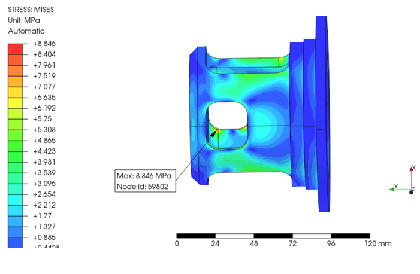
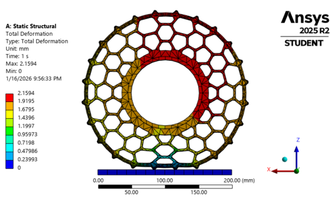

Mechanical work,
broken down.

Chassis & Suspension redesign
Led the design of the 2026 suspension redesign. Main goals were to reduce weight throughout the system. Integrate new brushless motors. Decrease mechanical slop in the pivot assemlby, by moving away from 3d printed parts. Integrated electrical systems into chassis.

motor housing mass optimisation
Validated motor housing design and optimised for mass and strenght with FEA simulations.

Non-Pneumatic Wheel
Led development of a compliant non-pneumatic wheel to eliminate the puncture risk. Explored spoke geometries in ansys, validated compliance and load-bearing capacity through FEA. Prototyped iterations using. Performed Instron tensile test on polyurethane to obtain material data for simulations.